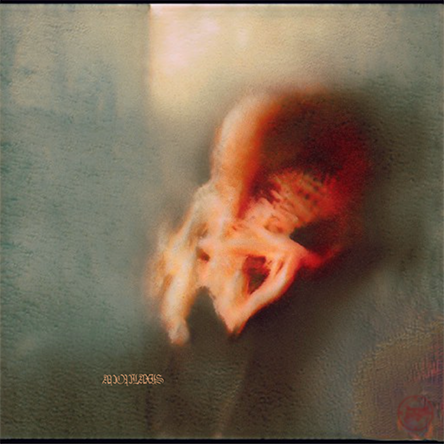
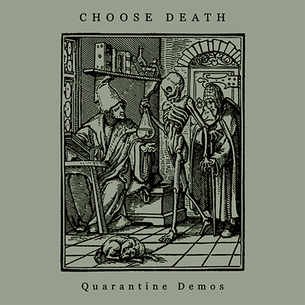
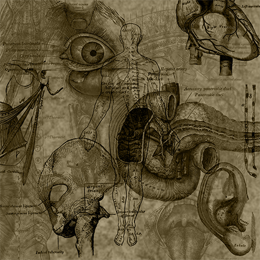

Choose Death - -
LK13d1: October 25, 2022 - Bandcamp
- the more you learn the worse it gets this is not a song this is a cry for help (0:37)

Arra - Arra
LK12d1: October 23, 2022 - Bandcamp
- Hafnium Skin (3:10)
- Haaiah's Court (0:36)

Choose Death - A Compilation of Drones
LK11d1: August 19, 2022 - Bandcamp
- Grisdinteation Pogsronser (6:00)
- The Queen of Swords and the Hermit (8:35)
- Fresh Air (8:58)
- Cue the Sun (7:04)
- Sinking (5:00)

Choose Death - Grisdinteation Pogsronser
LK10d1: October 21, 2021 - Bandcamp
- Grisdinteation Pogsronser (6:00)

Choose Death - Apoplaxis
LK9d1: October 5, 2021 - Bandcamp
- apoplaxis 1 (1:41)
- apoplaxis 2 (2:02)
- apoplaxis 3 (1:42)
- apoplaxis 4-7 (3:44)

Choose Death - Cue the Sun
LK8d1: June 4, 2020 - Bandcamp
- Cue the Sun (7:04)

Choose Death - Quarantine Demos
LK7d1: April 6, 2020 - Bandcamp
- The Queen of Swords and the Hermit (8:35)
- The Seraph Hath Uncovered its Eyes (3:54)
- Fresh Air (8:58)

Agon / Choose Death - Parched Prohet
LK6d1: November 22, 2019 - Bandcamp (Agon) / Bandcamp (Choose Death)
- Parched (Choose Death) (8:17)
- Prophet (Agon) (8:44)
Choose Death - Petroglyphs
LK5d1: November 16, 2019 - Bandcamp
- ...And You Will be Like God (2:06)
- Pathognomonic Fever (4:31)
- The Conscious Void (6:18)
- The Crushing Weight of a New Perspective Every Day (5:51)
- By the Tree from which You Hang (9:06)
- 1997 (14:49)
Choose Death - What the Fuck Happened to Me in My Childhood?
LK4d1: August 10, 2019 - Bandcamp
- Death is for the Living (4:20)
- George (3:11)
- Vǫlva Danzleikr (7:19)
- Augu Fyrir Huga Hennar (14:35)
- Móti Ragnarǫkum (8:46)
- Ung (3:07)
- III (7:53)
- Illa Tiðandi (10:38)
- Inspire through Suffering Motivate with Fear (4:12)
- Ave Satanas (6:56)
- IV (18:48)
- I (9:48)
- Sylvia (17:38)

Choose Death - Scaling the Tumulus
LK3d1: August 10, 2019 - Bandcamp
- Sinking (5:00)
- Waiting (4:54)
- Rebuilding Willpower One Step at a Time (18:01)

Choose Death - Wir Sind Götter / Gott ist der Mensch
LK2d1: May 8, 2014 - Bandcamp
- Summoning Marduk (1:08)
- Ninib, Horned One of Silence (6:20)
- Ol Sonuf Vaoresaji (6:09)
- Great Sleeping Serpent (11:45)
Choose Death - Hell Around You
LK1d1: February 5, 2014 - Bandcamp
- I (9:48)
- II (3:05)
- III (7:53)
- IV (18:48)
- V (5:14)